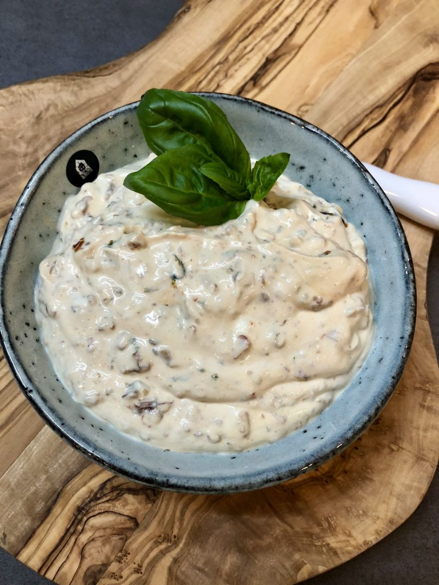

Frischer Basilikum-Dip

Rezept
Dies ist ein Rezept für einen leckeren und frischen Dip,
der auf der nächsten Party sicher gut ankommen wird.
Das beste daran? Wie einfach es geht!
Zutaten
- 500gr Frischkäse
- Ein Bund Basilikum
- 300gr Schalotten
- 3 Limetten
- Salz
- Pfeffer
- Paprikapulver (edelsüß)
Zubereitung
Und schon kanns losgehen!
- Schalotten schälen und in sehr feine Würfelchen schneiden
- Basilikum waschen und sehr fein hacken
- Frischkäse in einer großen Schüssel mit dem gehackten Basilikum und den geschnittenen Schalotten vermischen
- Den Saft von 3 Limetten dazu geben
- Mit einer guten Menge Salz, Pfeffer und Paprika abschmecken und das ganze schön vermengen
- Losdippen, zum Beispiel mit Brot, Karottensticks oder Crackern
Und das war's auch schon!